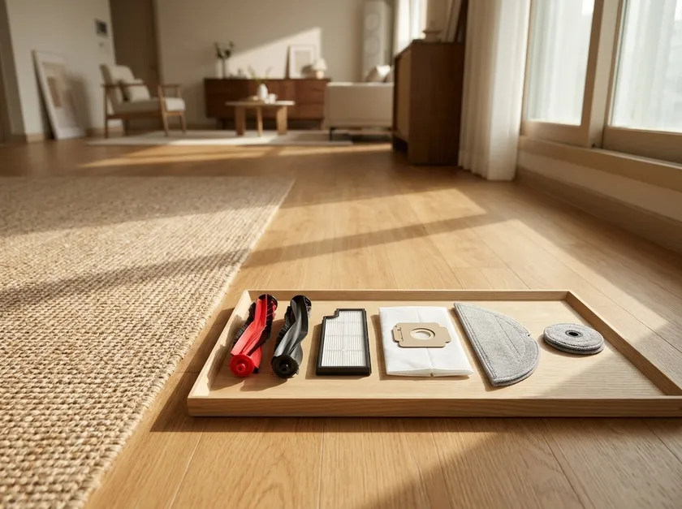
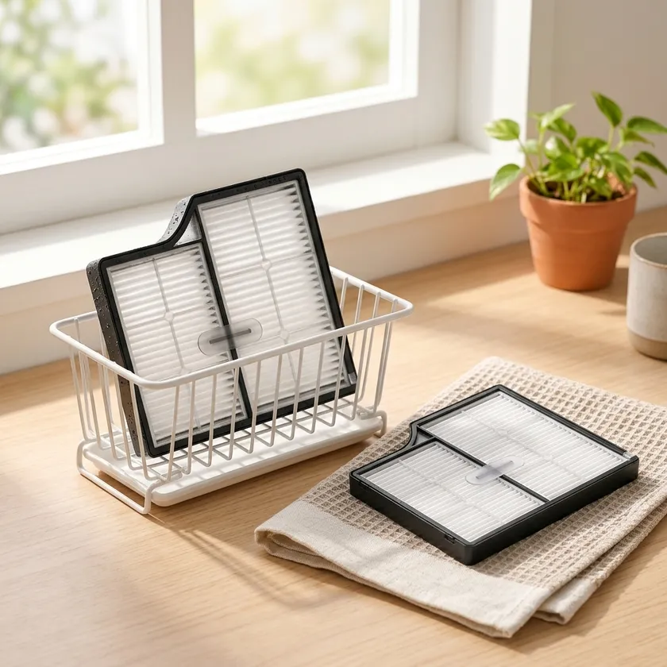
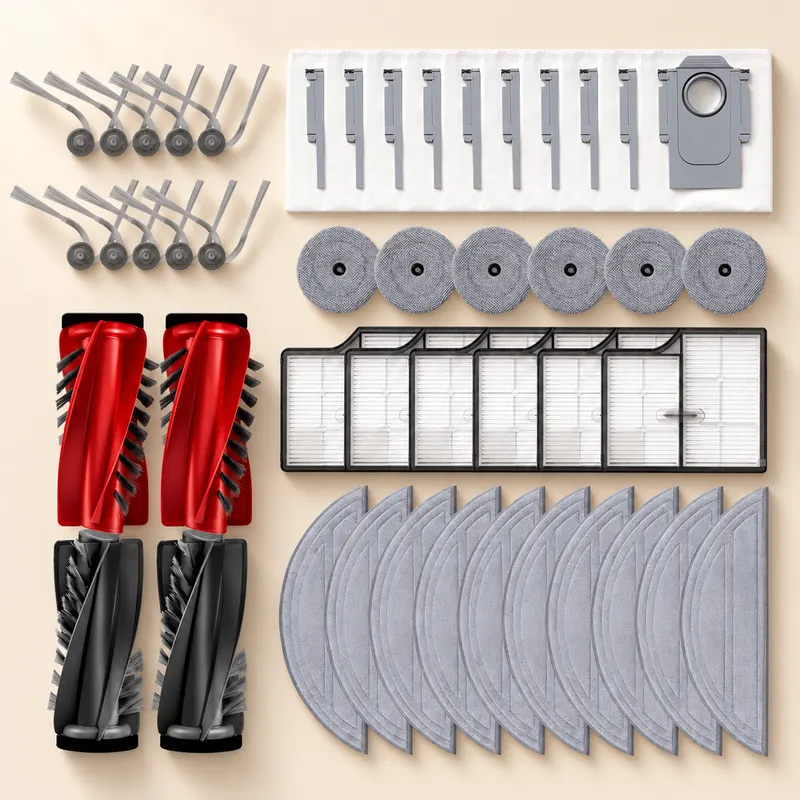

로보락 (Roborock)
로보락 S9 MaxV Ultra 소모품 교체 주기｜단차 필터·더스트백 1년 세트 비교
글·구성: 제이상점 · 기종별 1:1 호환 실물 점검 · 교체 주기 비교표 · 스마트스토어 패키지 안내

핵심 관리 · 선택 체크포인트
- 요즘 집에서 겪기 쉬운 도크에서 먼지 비움 모터 소리는 경쾌하게 나는데 정작 본체 먼지통에 머리카락 뭉치가 남아 있거나 바닥 물걸레질 뒤 모서리 먼지가 덜 잡히는 느낌, 혹시 우리 집 로봇청소기 이야기 같으신가요?
- S9 MaxV Ultra 구매 전 꼭 짚어볼 실물 부품 디테일: 호환 소모품을 고를 때 가장 먼저 살펴야 할 핵심은 비대칭 계단식 단차형 워셔블 필터와 슬라이딩 밀봉 더스트백의 정밀한 체결감입니다.
- S9 MaxV Ultra 소모품 교체 주기 & 전용 규격 한눈 비교표: 앱 잔여 수명 퍼센트(%)와 함께 아래 실물 마모 신호를 대조해 보시면 교체 타이밍을 놓치지 않고 S9 MaxV Ultra를 최적 상태로 유지할 수 있습니다.
- 단품 구매 vs 패키지 선택, S9 MaxV Ultra 옵션 고르는 현실 기준: 제이상점 S9 MaxV Ultra 페이지는 3개월·6개월·1년 세트 기간별 선택은 물론, 호환세제 포함 / 로보락 정품세제 업그레이드 / 세제 미포함까지 총 9가지 세분화 옵션을 지원합니다.
- 현재 대표 구성 기준가 69,500원대(옵션·할인 혜택에 따라 스토어 결제 화면 기준 상이)로 운영 중이니 우리 집 청소 주기와 남은 재고를 대조한 뒤 제이상점 로보락 S9 MaxV Ultra 스마트스토어 상세 옵션에서 가장 실속 있는 구성을 선택해 보세요.
실물 부품 디테일 · 관리 구성 이미지




부품 규격 · 점검 기준표
| 핵심 소모품 구분 | S9 MaxV Ultra 전용 규격 특징 | 체감 교체 신호 & 권장 관리 기준 |
|---|---|---|
| 슬라이딩 밀봉 더스트백 | S9 전용 카드 홀더 대용량 먼지봉투 | 봉투가 70~80% 차서 만졌을 때 묵직하거나 도크 흡입음이 둔해질 때 교체 |
| 단차형 워셔블 필터 | 비대칭 계단식 프레임 헤파필터 | 2주 간격 물세척 후 그늘 24시간 완전 건조 (예비 필터와 1:1 교대 장착) |
| 듀오디바이드·사이드브러시 | 2분할 원추형 메인 롤러 + 전용 사이드브러시 | 고무 날개 마모·찢김 또는 사이드브러시 탄성 저하 시 즉시 교체 |
💡 교체 주기가 겹치는 필터·브러시·물걸레·더스트백은 단품 배송비를 여러 번 내기보다 로보락 S9 MaxV Ultra 기간별 세트(3개월·6개월·1년)로 미리 구비해 두면 물세척 후 24시간 교대 건조까지 끊김 없이 관리할 수 있습니다.
자주 묻는 질문 (FAQ)
Q. S8 시리즈에 쓰던 직사각형 필터나 먼지봉투가 남았는데 S9 MaxV Ultra에 호환되나요?
A. 호환되지 않습니다. S9 MaxV Ultra는 본체 먼지통의 계단식 단차 프레임과 도크 슬라이딩 카드 치수가 S8 라인업과 완전히 다르므로 반드시 S9 전용 1:1 검수 규격 부품을 장착해야 미세먼지 역류를 막을 수 있습니다.
Q. 집에 이미 전용 클리너 세제가 남아 있는데 소모품만 따로 고를 수 있나요?
A. 네, 불필요한 중복 구매를 줄이실 수 있도록 세정제를 뺀 구성도 별도로 마련되어 있습니다. 도크 세제 여분이 넉넉하다면 로보락 S9 MaxV Ultra 세제 미포함 실속 세트 페이지에서 3개월·6개월·1년 기간만 골라 실속 있게 준비해 보세요.
제이상점 1:1 검수 추천 패키지 · 구매 안내
메인 추천 구성
대표 구성 참고가 69,500원대 (옵션·쿠폰별 스마트스토어 결제 화면 기준)
1년세트1년세트｜호환세제→정품세제 업그레이드6개월세트6개월세트｜호환세제→정품세제 업그레이드3개월세트

함께 많이 찾는 보충 구성
대표 구성 참고가 58,700원대 (옵션·쿠폰별 스마트스토어 결제 화면 기준)
1년 세트 (세제 미포함)6개월 세트 (세제 미포함)3개월 세트 (세제 미포함)
☑️ 주문 전 확인해 두면 좋은 제이상점 안심 포인트
· 기종별 1:1 전용 규격 검수: 모델명·연식에 맞는 호환·정품 구성을 검수해 오주문 불안을 줄였습니다.
· 해외직배송 미리 주문 팁: 중국 구매대행·해외직배송 상품이므로 마지막 여분 1개를 꺼내 쓰는 시점에 개인통관고유부호와 함께 여유 있게 주문해 두시면 훨씬 경제적인 비용으로 끊김 없이 교체하실 수 있습니다.
· 기종별 1:1 전용 규격 검수: 모델명·연식에 맞는 호환·정품 구성을 검수해 오주문 불안을 줄였습니다.
· 해외직배송 미리 주문 팁: 중국 구매대행·해외직배송 상품이므로 마지막 여분 1개를 꺼내 쓰는 시점에 개인통관고유부호와 함께 여유 있게 주문해 두시면 훨씬 경제적인 비용으로 끊김 없이 교체하실 수 있습니다.
📖 더 많은 가정 내 사용 스토리와 상세 후기가 궁금하시다면
📱 네이버 블로그 모바일 원문 보기 ↗